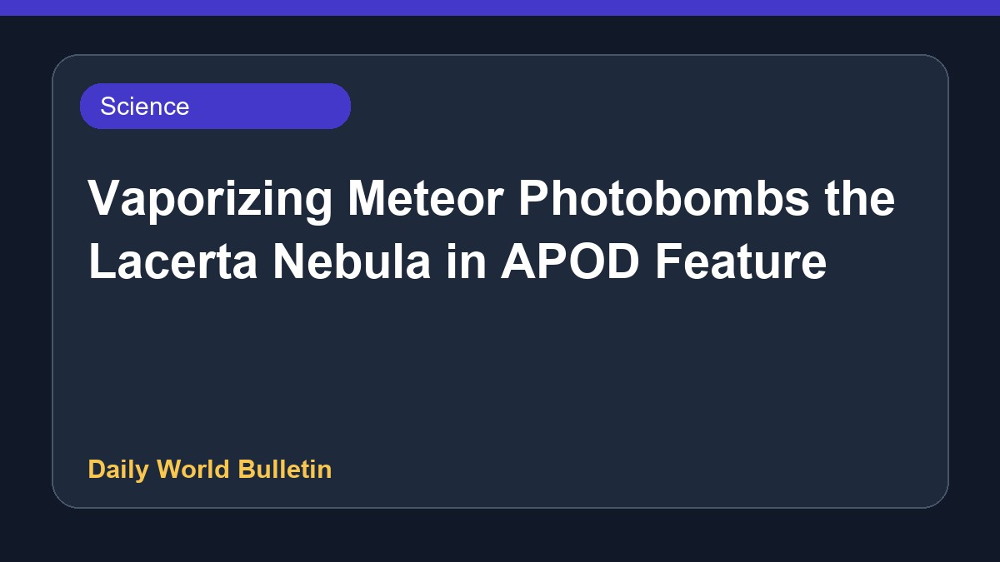

Vaporizing Meteor Photobombs the Lacerta Nebula in APOD Feature

NASA's Astronomy Picture of the Day for August 3, 2026, showcases a fascinating celestial capture featuring a vaporizing meteor photobombing the distant Lacerta Nebula. The daily feature highlights the cosmos through unique astronomical imagery accompanied by professional explanations. Further details regarding the specific observation and scientific significance remain limited in the current release.
Original source: NASA
APOD: 2026 August 3 – Vaporizing Meteor Photobombs the Lacerta Nebula ↗
APOD: 2026 August 3 – Vaporizing Meteor Photobombs the Lacerta Nebula ↗